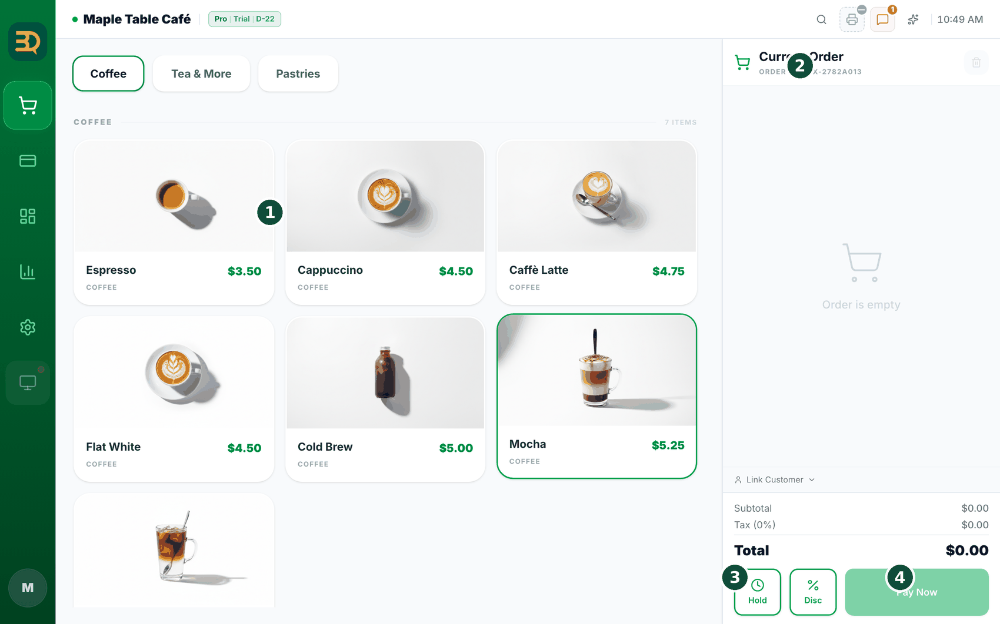
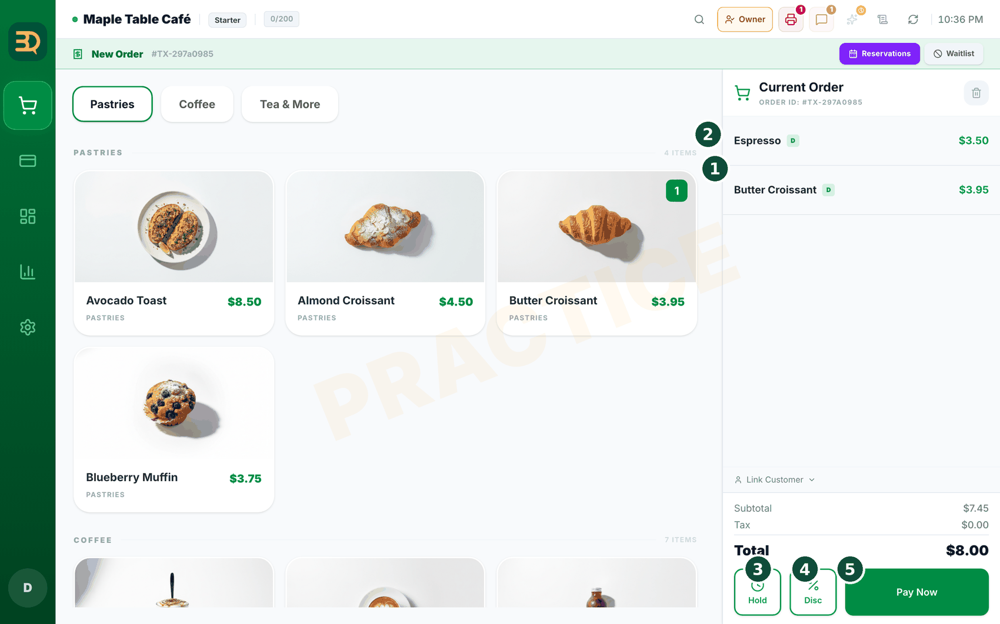
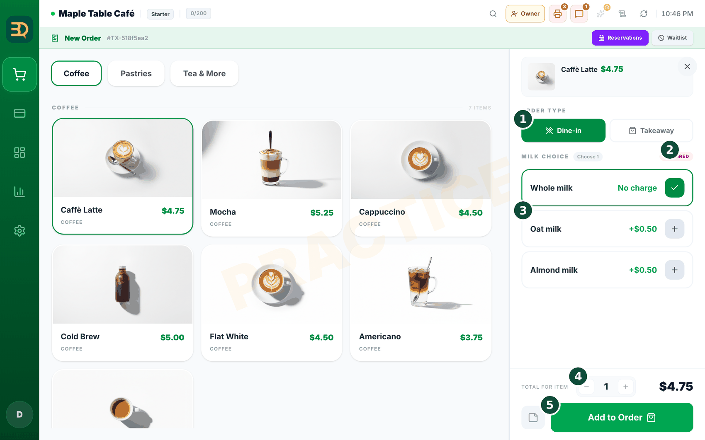
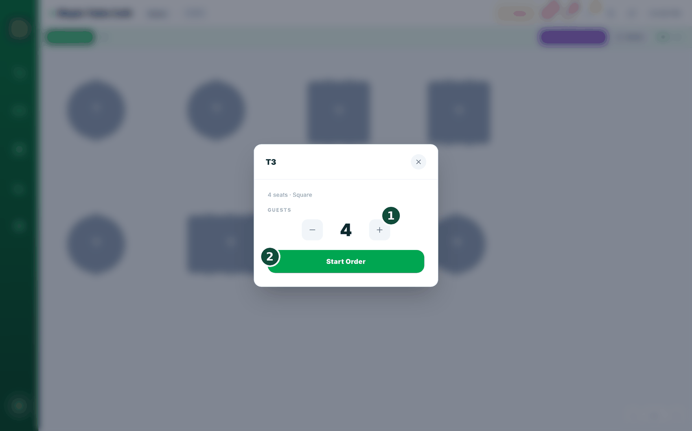
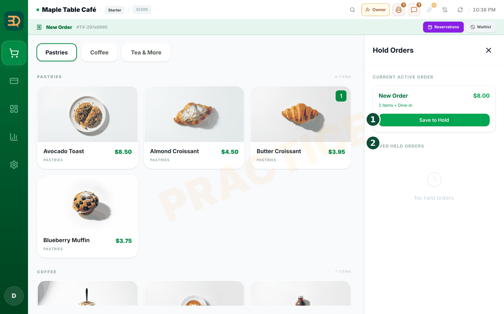
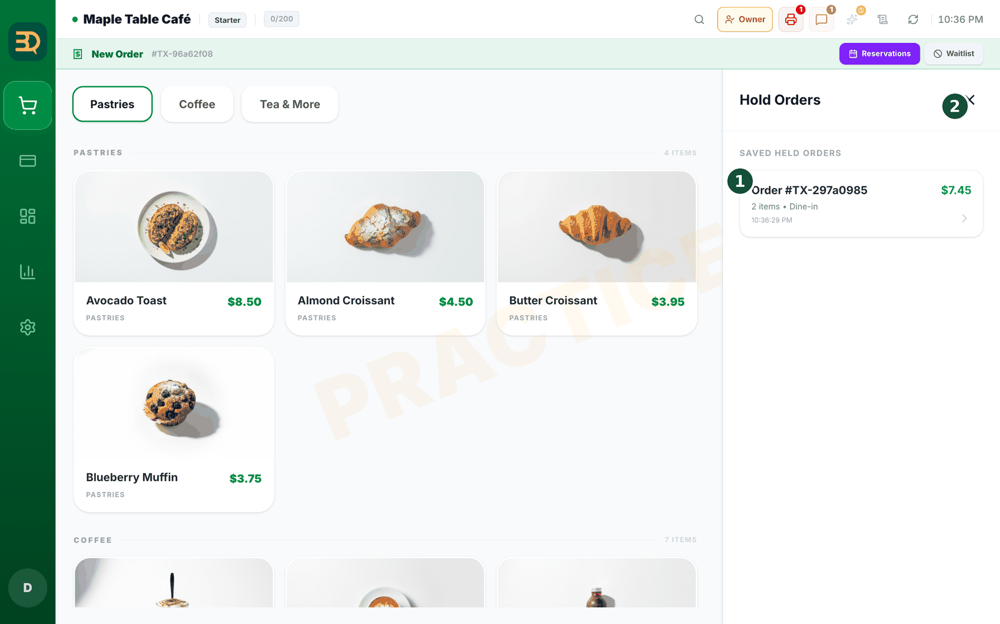
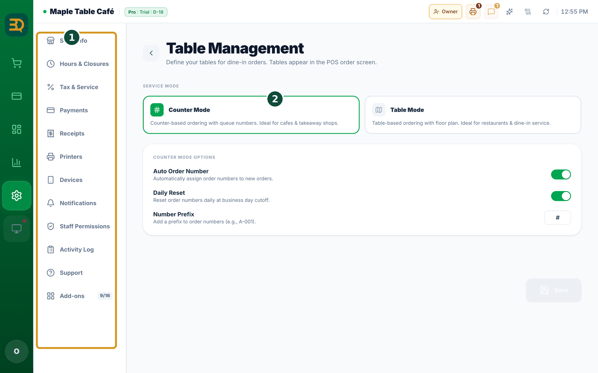
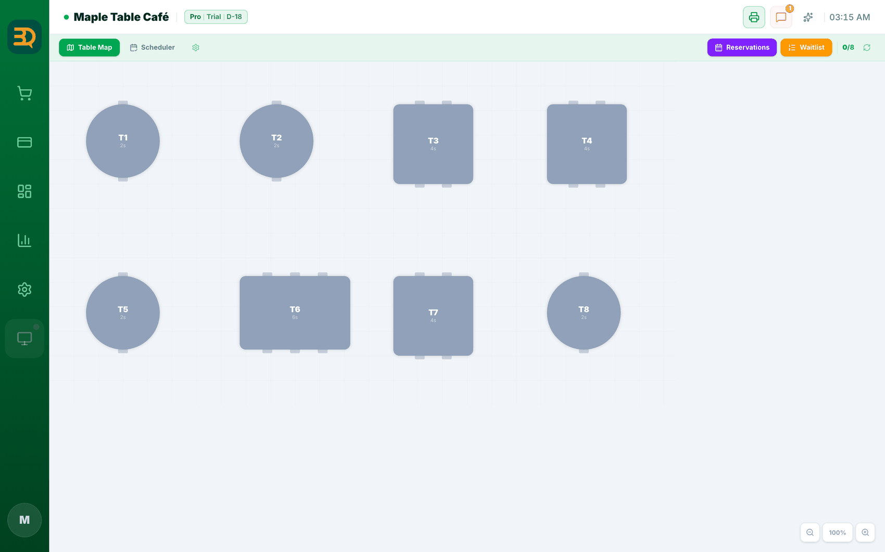
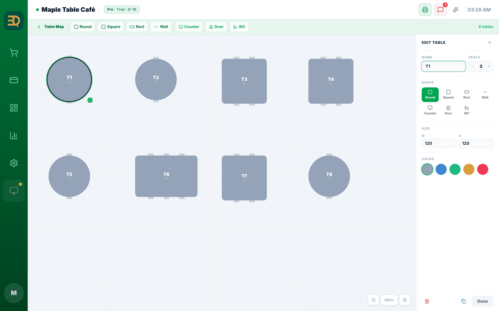
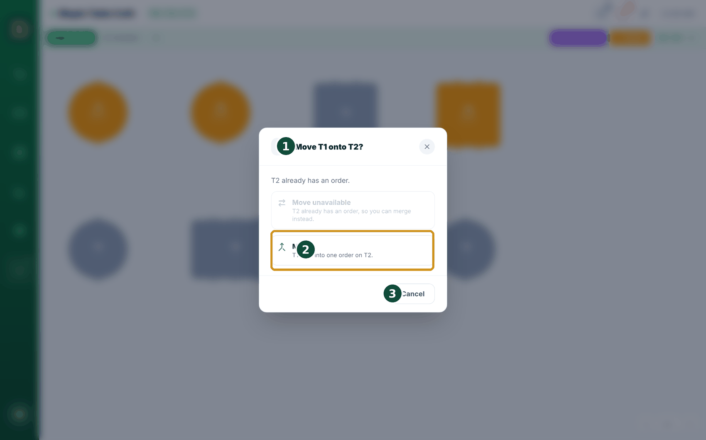

6Tomar pedidos
Esta es la tarea principal: tomar un pedido. Funciona un poco distinto en las tiendas de mostrador y en las de mesas. Encuentre su caso a continuación.



- Si atiende en un mostrador: toque cada producto que quiere el cliente. Se agrega al pedido al costado de la pantalla.
- Toque el mismo producto otra vez para agregar más. El número aumenta.
- Cuando el pedido esté listo, toque Pay Now (Pagar ahora) para cobrar.

- Si atiende en mesas: abra el mapa de mesas (un dibujo de su salón). Toque la mesa donde está sentado el cliente. Así empieza su pedido.
- Agregue sus productos de la misma manera: toque cada uno.
- ¿Necesita una nota especial para la cocina? Toque el producto y agregue una nota del producto, como "bien caliente" o "sin hielo".
- ¿Necesita parar y volver más tarde? Toque Hold (Retener). El pedido se guarda. Puede volver a abrirlo cuando quiera (consulte "Poner un pedido en espera" más abajo).
Poner un pedido en espera
Deje un pedido para más tarde. A veces no puede terminar un pedido de inmediato: un cliente se aparta o llega otra persona. Hold (Retener) le permite dejar el pedido en espera y volver a él. No se cobra nada y no se pierde nada.
- Mire la parte inferior del panel del pedido. Verá el botón Hold (Retener), justo al lado de Disc (descuento).

- Toque Hold (Retener). El pedido queda en espera sin cobrar a nadie. La pantalla se vacía para que pueda atender a la siguiente persona.
- En una mesa, el pedido en espera queda vinculado a esa mesa, así que es fácil volver a encontrarlo.

- Para recuperarlo, abra la lista de pedidos en espera y toque el pedido para reanudarlo.
- El pedido vuelve tal como lo dejó. Agregue más productos si quiere y continúe con Pay Now (Pagar ahora).
Crear su mapa de mesas
Si atiende en mesas, el mapa de mesas es un pequeño dibujo de su salón. Toca una mesa para empezar el pedido de esa mesa. Se configura una sola vez. Así se dibuja.
El servicio a mesa está activado de forma predeterminada en los tipos de negocio Restaurante y Bar. En los demás, actívelo en Settings › Add-ons › Tables (accione el interruptor). El mapa de mesas solo aparece cuando el servicio a mesa está activado.
Antes de empezar: asegúrese de que el servicio a mesa esté activado (consulte el recuadro de arriba).



- Abra el Table Map (Mapa de Mesas): toque Tables (Mesas) en la barra lateral izquierda. (Solo aparece cuando el servicio a mesa está activado).
- Toque el ícono de engranaje junto a la pestaña Table Map (Mapa de Mesas) de arriba (Edit Layout (Editar diseño)) para entrar en el editor. Si todavía no tiene mesas, también puede tocar el botón Open Editor (Abrir editor) en el centro de la pantalla. Aquí es donde crea su salón.
- En la barra de herramientas de arriba, toque la forma que quiere agregar: Round (Redonda), Square (Cuadrada), Rect o Wall (Pared), además de Counter (Mostrador), Door (Puerta) y WC. Aparece una mesa (o elemento) nueva.
- Toque la mesa que agregó y se abrirá un panel de edición a la derecha. Defina su Name (como "T1" o "Patio 3"), el número de Seats (Asientos), la Shape (Forma), el Size (Tamaño) y el Color, y luego toque Done (Hecho). Verá cómo cambia la mesa a medida que elige.
- Arrastre la mesa hasta donde realmente está en su salón.
- Repita con cada mesa que tenga.
- Cuando termine, toque el botón Table Map (volver) arriba a la izquierda para regresar al mapa. Ahora puede tocar una mesa para empezar un pedido para comer en el local.
Mover y unir mesas
Mueva y una mesas arrastrando y soltando. Los clientes cambian de idea. Alguien quiere pasarse a la terraza, o dos mesas deciden pagar juntas. En el mapa de mesas puede tomar todo el pedido de una mesa y soltarlo en otro lugar, sin volver a escribir nada.
Está integrado en el Table Map (Mapa de Mesas). Funciona siempre que el servicio a mesa esté activado; no hay nada que activar.
Mover un pedido a una mesa vacía
- Mantenga pulsada una mesa ocupada un momento hasta que se levante, luego arrástrela hasta una mesa vacía y suéltela.
- Un pequeño recuadro pregunta "Move T1 to T3?"; toque Move (Mover). Todo el pedido pasa a la nueva mesa y la mesa anterior queda vacía. El nombre de la mesa no cambia.
Unir dos mesas ocupadas en una sola cuenta

- Mantenga pulsada una mesa ocupada y luego arrástrela sobre otra mesa ocupada.
- El título del recuadro ahora dice "Move T1 onto T2?", la opción Move (Mover) aparece en gris ("Move unavailable") y se muestra una tarjeta Merge (Unir): "T1 + T2 into one order on T2." Tóquela. Ambos pedidos pasan a ser una sola cuenta en la mesa sobre la que soltó, y la otra mesa queda vacía.
Mueva a todo un grupo con un dedo. La mayoría de las cajas le obligan a anular el pedido y volver a marcarlo todo solo para cambiar de mesa. BrewDesk simplemente lo desliza, y un Undo de 6 segundos hace que un error del dedo nunca le cueste una venta.
Es bueno saberlo: soltar sobre una mesa reservada muestra primero una advertencia. Una cuenta unida conserva los descuentos de la mesa principal, y cada mesa sigue siendo un único pedido limpio.
Temas relacionados
¿Necesita más ayuda?
Puede enviar un ticket de soporte desde la app en Settings › Support.